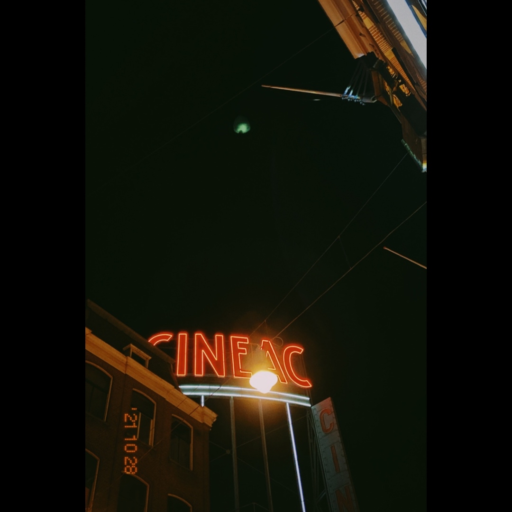
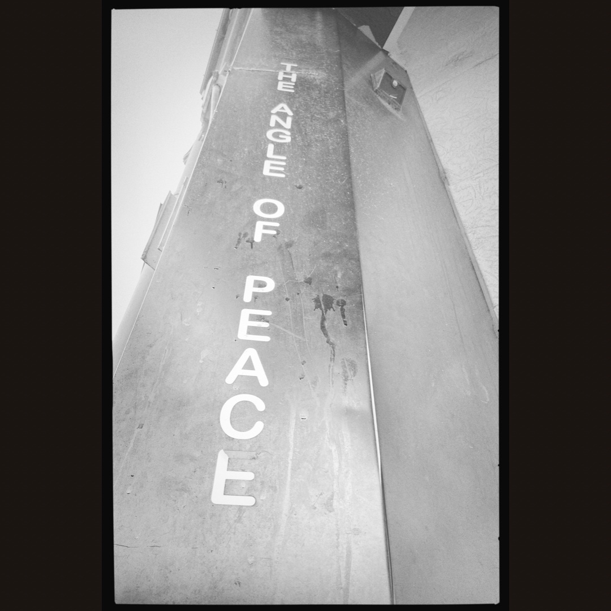
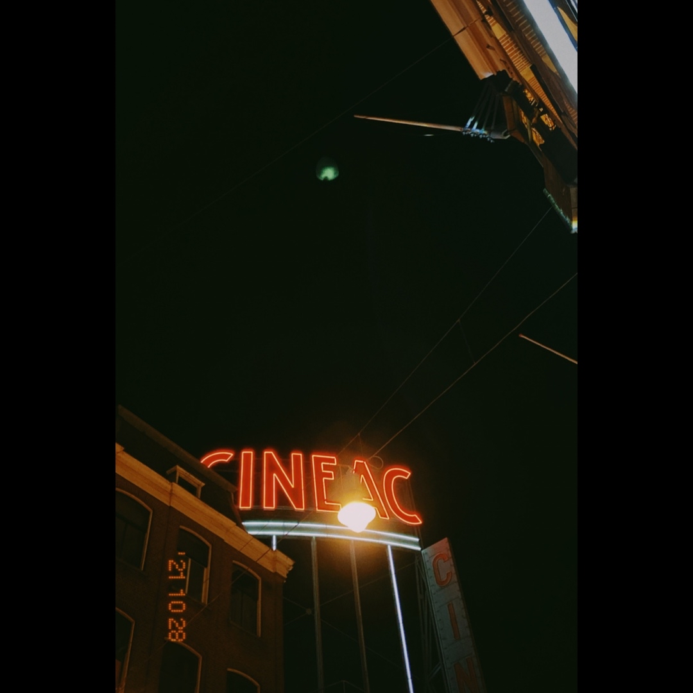
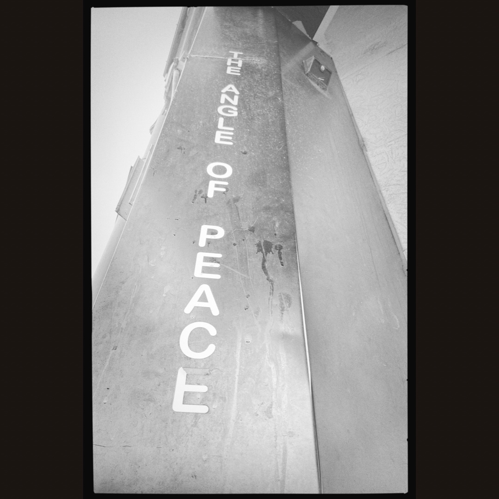

I don't sleep, I dream
Swipe left on the artwork above to listen to the first release by Perfume Parking Lot
Spanning several years of electronic experimentation, this collection of tracks explores my fascination with a wide variety of electronic music.
I like to think the sound of I.D.S.I.D could possibly be viewed as trying to explore connections between the often disparate worlds of dance and ambient music,
but the clue to the real central topic of the record is in the title - dreaming.
We each have our own personal forms of escapism that allow us to exist in this world and I guess in a way this record is a celebration of everything that comes with that.
Desire, love, transcendance it's all in there somewhere. Probably.
Anyway I congratulate you for making it this far and sincerly hope that you enjoy the record, I'm so excited for the world to finally be introduced to this noise and if you want more there is lots & lots more on the way - and an ig link at the bottom of the page to stay updated.
View the alternative artwork below and some other images from the making of:


 



A note on this method of release - clearly this isn't the most convient way to consume music in this modern world of ours and I hope to start putting stuff out on platforms soon.
However for this release, there is some glaring reasons why that can't really happen (even if about ten people ever listen) and I appreciate you giving this a go.
More soon (hopefully),
love from Joe, Jan 2022